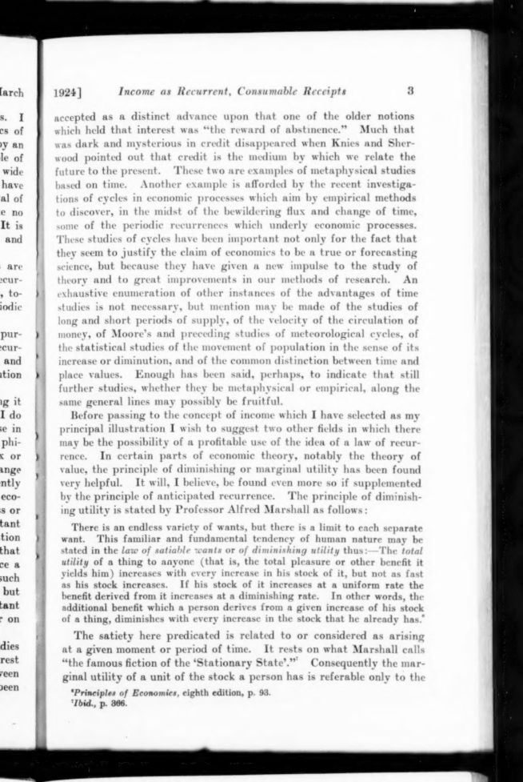

Frank, 1924: a economia como estudo do comportamento de preço
Leitura: 9 min
Lawrence K. Frank situa a economia no estágio especulativo das ciências e prevê uma ciência social de hábitos e experimentos, em que a economia estudaria o comportamento de preço.


Imagine-se um aquário em que peixinhos dourados, caracóis e plantas estão tão bem combinados com a água que o conjunto se equilibra sozinho, dependendo apenas da luz do sol. A atividade de cada peixe pode então ser descrita pelas condições do sistema, e a absorção e a liberação de oxigênio podem ser enunciadas como lei, com fórmula matemática. Agora suponha-se que os peixes sejam livres para participar ou não dessa troca, para ampliá-la ou limitá-la. O sistema fica indeterminado e, diz Lawrence K. Frank, mal chega a ser um sistema. A imagem resume o diagnóstico do longo ensaio que ele, assinando de Nova York, publicou no número de março de 1924 da American Economic Review.
Onde está a economia na escala das ciências?
Diante da crítica acumulada à economia e da variedade de propostas para reformá-la, Frank quer descobrir em que ponto da evolução científica a disciplina se encontra, para antecipar os passos seguintes. Visto de fora, por quem não se deixa confundir por rótulos, o que parecem problemas e soluções diferentes das várias escolas é, para ele, um só empreendimento especulativo: explicar os fatos econômicos com duas concepções básicas e opostas, a de um sistema econômico, que opera por forças de equilíbrio, e a da autonomia humana, do homem como agente livre que escolhe racionalmente.
As duas concepções têm apoio empírico. A observação mostra uniformidades quase mecânicas entre os fenômenos pecuniários, o que sugere um sistema; e mostra também homens que escolhem ocupações, inventam métodos e decidem quanto esforço aplicar, o que sugere liberdade. Raramente são enunciadas, observa o autor, porque fazem parte do senso comum do economista e geram os próprios problemas que ele estuda.
Como as escolas tentam conciliar as duas ideias?
O aquário serve para mostrar o impasse. Segundo Frank, as tentativas de solução dividem-se entre um grupo pró-sistema, que, como os economistas matemáticos, procura tornar o controle do sistema rigorosamente mecânico, e um grupo pró-autonomia, que se apoia na psicologia e insiste na liberdade de escolha. Cada escola inventa uma fórmula de mediação: ou reduz a autonomia a ficção, ao admitir apenas escolhas conformes ao interesse racional, ou suaviza o sistema em tendências que, no longo prazo e com tudo o mais constante, moldam as decisões. O conceito de forças econômicas permite passar do agente autônomo ao sistema mecânico sem ruptura no argumento; e a autonomia exige uma teoria dos motivos, o que explicaria, para o autor, a presença do hedonismo e do cálculo de utilidade na teoria.
Frank compara a situação com a da metafísica, dividida entre os que querem salvar a aparência e os que perseguem a realidade ou o absoluto, assim como os economistas se dividem entre autonomia e sistema. E ressalva que não pretende depreciar ninguém: os economistas, herdeiros de uma tradição filosófica, produziram resultados empíricos de valor.
“A economia está naquele estágio especulativo que precede o desenvolvimento de uma ciência, quando os homens se ocupam em explicar os acontecimentos por símbolos verbais.” (“economics is in that speculative stage which precedes the development of a science, when men are engaged in explaining or accounting for events by verbal symbols.”)
Os programas de reforma bastam?
O número crescente de programas de reforma sugere ao autor que esse estágio está terminando. Mas os remédios, diz, são versões especializadas dos interesses tradicionais da profissão, cada um propondo um método exclusivo. Frank aponta ainda a falta de formação científica dos estudantes de economia e a dependência quase exclusiva da dialética e da lógica. Sobre a estatística, uma nota é taxativa: aplicada a dados não experimentais, ela mede tendências, mas não revela sequências confiáveis de causa e efeito, porque não há como controlar os acontecimentos passados; estatística e matemática não substituem o experimento.
O que muda se a autonomia for abandonada?
A segunda parte é uma previsão, que o autor diz não ser receita de salvação. A ciência, lembra, muitas vezes resolve problemas mostrando que eram artificiais, legados de um estágio anterior do pensamento. Para Frank, a ideia de autonomia é uma sobrevivência atenuada do animismo, que deu as noções de alma, vontade e razão; e a de um sistema de forças vem do estágio metafísico em que os fenômenos eram vistos como obra de forças especiais. Abandonar a primeira transforma o comportamento humano em fenômeno natural, uma sequência de antecedente e consequente.
O esquema é o do estímulo e resposta. Cada pessoa, desde o nascimento, forma hábitos ao responder aos estímulos do ambiente, e esses hábitos disparam quando o estímulo aparece; o organismo herdado limita o que se aprende, como no daltônico. O motivo seria apenas o nome de um hábito não revelado. Abandonada a autonomia, cai também o sistema: o que parece uma ordem de forças é a regularidade das respostas agregadas de pessoas com hábitos semelhantes, aprendidos sob a supervisão de pais e mestres e conformes aos padrões aprovados pelo grupo.
O que são propriedade e contrato nesse esquema?
Frank descreve a vida social como um sistema de tabus. O indivíduo aprende a não tocar no que foi apropriado por outro, mas também que pode levantar a proibição por uma cerimônia, um ritual ou a oferta de símbolos. A propriedade privada e os tabus sexuais e sociais sobre as pessoas seriam os tabus; o casamento, o voto e o sistema de preços, os rituais para levantá-los. Ao pagar com dinheiro ou crédito, um homem não remove o tabu sobre a coisa, apenas o transfere para si. Numa nota, o autor trata nos mesmos termos o preço da noiva e a prostituição; em outra, atribui a discórdia em torno dos sindicatos à saída de um grupo, os empregados, de um tabu contra o uso de métodos comerciais na venda dos próprios serviços.
Com a especialização técnica, as práticas de tabu ficaram mais elaboradas, e os negócios tornaram-se a ocupação dominante: o uso hábil de bens e serviços como estímulos para obter de outros a maior quantidade possível de símbolos pecuniários, exceto onde essa prática foi parcialmente proibida, como nos serviços públicos.
Como se dividiria o trabalho entre as ciências sociais?
A psicologia, no esquema de Frank, estudaria a formação dos hábitos e receberia o problema tradicional do valor e da utilidade: o valor seria o nome do estímulo de uma resposta aprendida, e a utilidade decrescente, a elevação do limiar de resposta a estímulos repetidos. A história seria o ramo genético, que traçaria a evolução dos hábitos e das práticas de tabu, como a paleontologia faz com os organismos. A ciência política estudaria a escolha dos representantes do grupo, a lei e o Estado. Para o autor, as práticas foram aprendidas dos mais velhos e modificadas de tempos em tempos quando novas técnicas e povos estrangeiros forçaram mudanças, e parece provável a origem do Estado na família ou no encontro de duas tribos estrangeiras. A sociologia ficaria com as práticas restantes, como casamento, família, crime, e com a passagem de uma prática a outra, como a dos agricultores e trabalhadores que recorrem à política.
“A economia será o estudo do comportamento de preço.” (“economics will be the study of price behavior”)
O que sobra para a economia?
Sobram os contratos e as vendas que usam dinheiro e crédito, com respostas quantitativas medidas em termos pecuniários. O casamento, que promete ações futuras não especificadas, fica fora; o contrato por pagamento determinado, dentro. Os problemas seriam as variações das respostas ao mesmo estímulo de tempo em tempo e de lugar em lugar: a perícia de quem tem longa experiência de compra e venda, a diferença entre as flutuações dos preços por atacado e no varejo, o hábito de comprar barato e vender caro que faz os preços oscilarem e ter tendências. Os símbolos pecuniários não formariam uma ordem separada de fenômenos governada por forças, mas índices do comportamento, usados como os físicos usam o espectroscópio.
É possível fazer experimentos com a sociedade?
O ensaio fecha com o experimento. Para Frank, ciência é um conjunto de técnicas, e não há técnicas confiáveis sem fazer coisas. Não se pode experimentar com um sistema, com a vontade ou com a mente do grupo, mas pode-se experimentar com hábitos e práticas de tabu. Campanhas de publicidade, associações e organizações industriais já seriam experimentos em andamento, e os ciclos de negócios oferecem sequências repetidas de comportamento de preço. A ciência social poderia, um dia, desenvolver técnicas para formar e desfazer hábitos num grupo e promover uma vida realmente social, que a indústria mecânica exige; ajudaria, escreve o autor, se ao menos todos vivessem no mesmo século.
“Não poderemos ter uma ciência social de alguma importância real enquanto não tivermos elaborado uma técnica para experimentar com o comportamento social.” (“We can have no social science of any real moment, until we have worked out a technique for experimenting on social behavior.”)
Na minha leitura
Na minha leitura, o ensaio é um programa de método mais do que uma análise econômica. Frank aplica à economia o behaviorismo da psicologia americana do início dos anos 1920 e trata as instituições como hábitos coletivos, como os institucionalistas. O diagnóstico de partida, o conflito entre sistema e autonomia, ocupa a primeira parte; a segunda, prospectiva, com sua linguagem de tabus, traduz contrato, casamento e Estado num vocabulário antropológico.
O texto pertence ao debate institucionalista sobre o lugar da economia entre as ciências sociais. A recusa da estatística de dados passados como substituta do experimento e a defesa de técnicas experimentais sobre o comportamento antecipam discussões que a economia só retomaria muito depois.
Glossário
- Autonomia humana
- no ensaio, a concepção do homem como agente livre que escolhe racionalmente.
- Estímulo e resposta
- esquema behaviorista em que o comportamento é uma resposta aprendida a um estímulo do ambiente.
- Tabu
- proibição sancionada pelo grupo; Frank usa o termo para a propriedade privada e as restrições sobre pessoas.
- Comportamento de preço
- expressão de Frank para as práticas de contrato e venda com respostas medidas em dinheiro.
- Animismo
- crença de que os fenômenos são obra de espíritos ou forças personificadas.
Fontes
- The Emancipation of Economics — Lawrence K. Frank (Nova York) (pp. 17–38). JSTOR · Internet Archive (número completo, PDF)
- Edição completa, com os demais artigos: Nº 185 do Arquivo.
Documento em domínio público (EUA, publicado antes de 1931), via JSTOR Early Journal Content e Internet Archive. Resumo e comentário do autor deste site, sem afiliação com a American Economic Association. Encontrou um erro? Escreva: a correção é publicada no próprio texto, com data.
← Hansen, 1924: demanda real, demanda monetária e o ciclo econômico ↑ Nº 185 · Plehn e a renda recorrente; Lucas e o salário mínimo de Massachusetts Lucas, 1924: dez anos de salário mínimo recomendatório em Massachusetts →